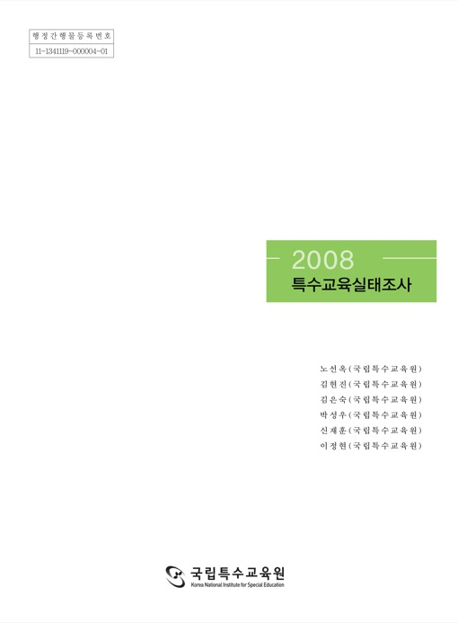
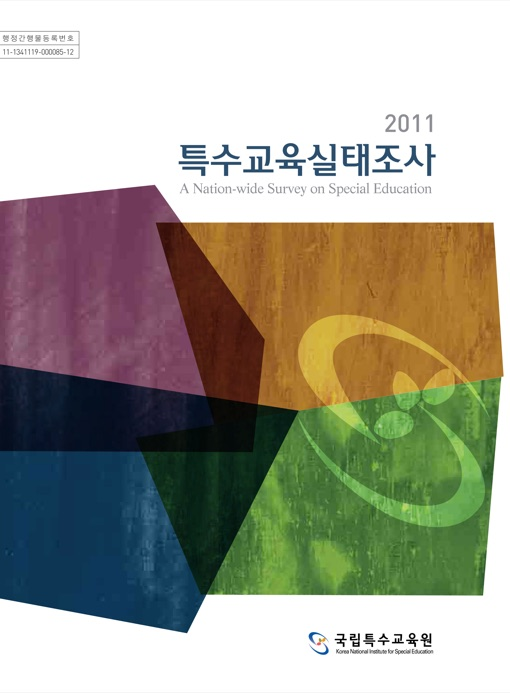
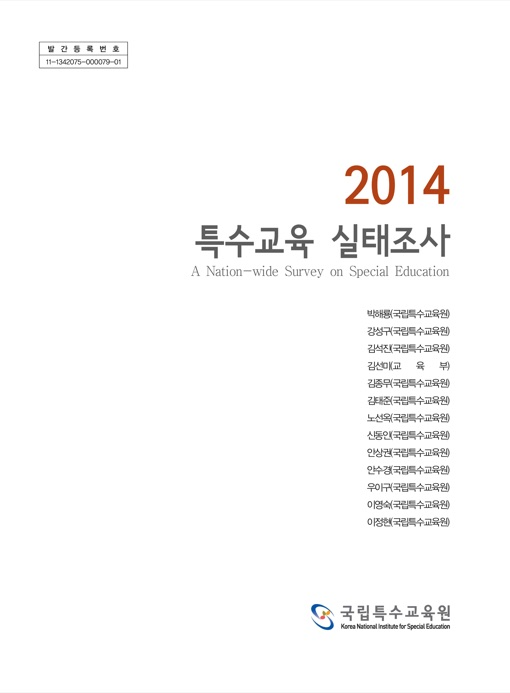
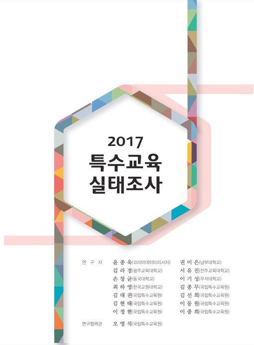
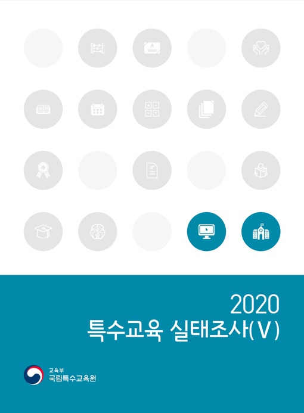
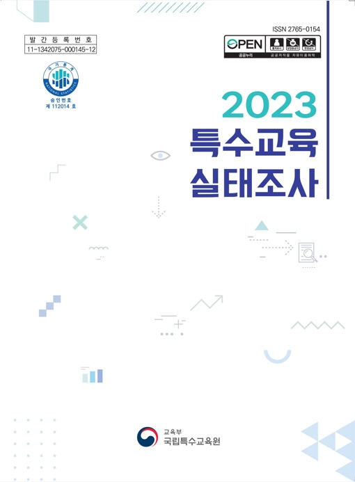
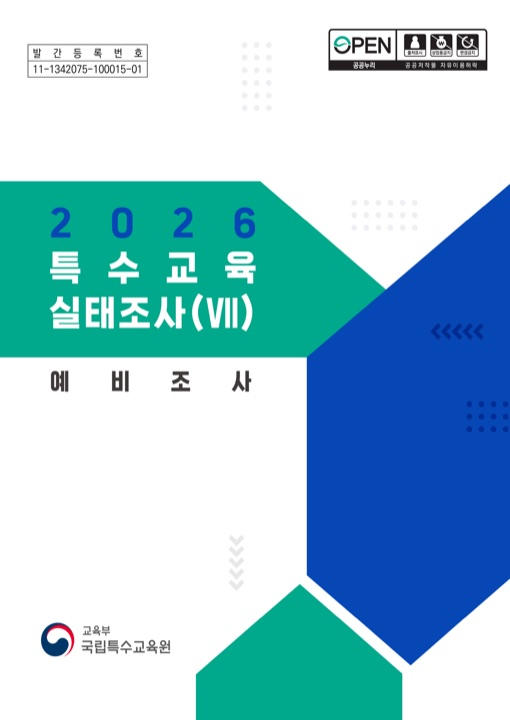
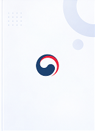

궁금한 특수교육 데이터를 찾아보세요.
추천 검색어
2008년부터 3년마다 조사되는 특수교육 데이터를 수집 및 가공하여, 교육 현장과 국민의 실질적인 데이터 활용을 지원합니다.
73.7%70.8%
전체 양적 성장
680.6%588.2%
조기개입 확대
99.8%56.5%
인프라 확충
74.1%16.6%
통합교육 성과
출처: 교육부 국립특수교육원, 특수교육통계(2008~2026년)
변화하는 교육 현장을 담아온 특수교육 실태조사의 기록
2008

2011

2014

2017

2020

2023

2026


현재 배너01 / 전체01
시스템 구축 진행 안내
특수교육 실태조사 데이터 활용 시스템은 현재 구축 진행 중입니다.
통계 프로그램 화면(조사 변천사·특수교육 현황·시계열·핵심데이터 시각화·교차분석)은 개발이 끝나는 대로 순차 개통합니다.
특수교육 실태조사 데이터 활용 시스템